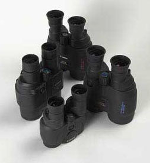
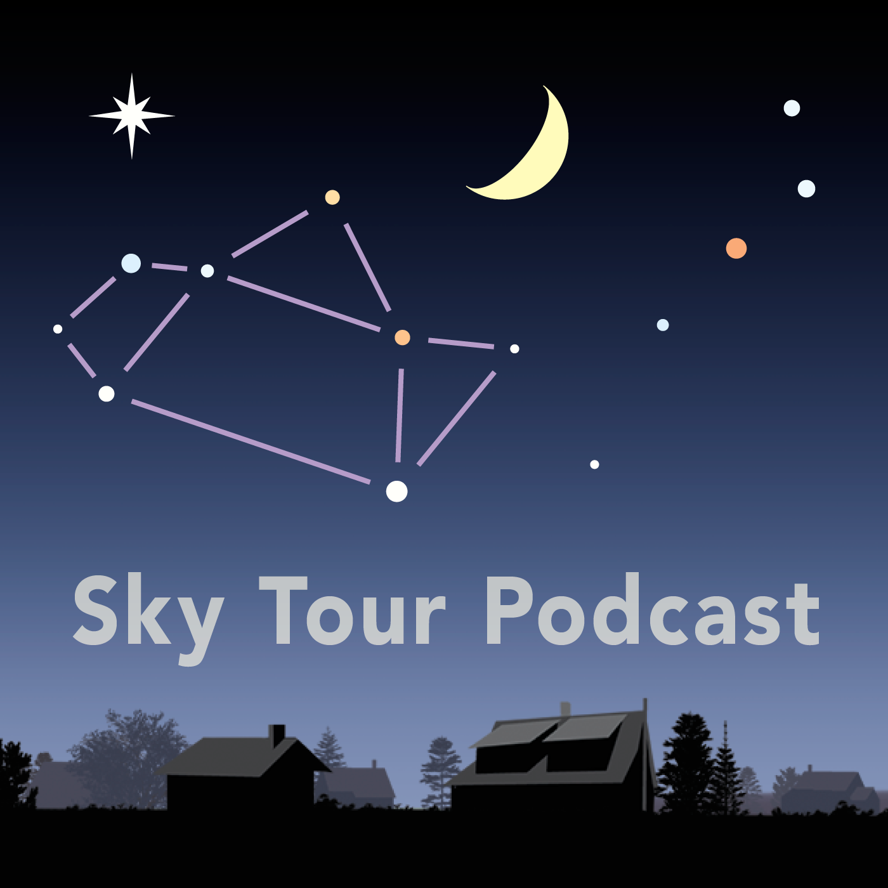

FAMILY FUN WITH SKY WATCHING
Make stargazing a family activity! Find and view the planets together, or spend an early
morning watching a meteor shower. We have collected several fun projects in which you can
fashion your own observing tools. After creating them together, step outside and use them!
Kids will have fun making star maps, which can be used throughout the year to locate
your favorite stars and constellations, and a sundial, which will help them measure time
on sunny days. We even have a card game to help the entire family learn 52 constellations.
Whether you are stargazing with a few loved ones or with the whole neighborhood,Sky &
Telescope has some family-friendly projects for you to try.
NINE WAYS TO GET YOUR CHILD
INTO ASTRONOMY BEFORE
SUMMER ENDS
Kids are naturally curious about the world, so getting your children into astronomy
could be an easy sell if you go about it right. Start with something fun to hook their
interest,like a late-night stargazing trip or a game. Here are nine ways to make
astronomy your childrens number-one interest this summer.
STARGAZING TRIP

What kid does not love staying up past their bedtime to go on an adventure? Bring
plenty of blankets and snacks, and find a scenic spot outside your town or city. While
any clear night can be a good night for this activity, choosing one with a special
astronomical event will make it more memorable and perhaps pique more interest.
This summer, look for bright Jupiter after sunset. Antares, the star that marks
the heart of Scorpius, the Scorpion, shines just a couple degrees away from it in August.
The waxing gibbous Moon will interfere with the peak of the Perseid meteor shower
(night of August 12–13) this year, but you can look for meteors in the week before or
after that date. If you can not find time around one of those, check out the weekly Sky at
a Glance for what is happening when you do go out.
GLOW-IN-THE-DARK PAINT OR STICKERS
You can also bring the stars inside by creating constellations on your child’s ceiling. If
you’re not artistically inclined, buy a constellation kit (check Etsy if you have trouble
finding one). If your child is old enough, this is a fun activity to do together — and you
can sprinkle in some knowledge as you work, like the fact that on a clear night you
can see up to 2.5 million light-years into the sky (a mind-boggling distance, even for
adults). Constellation ceilings are great even for kids who are too young to help
install them. They’re fun to look at and can instill a sense of curiosity about the night sky.
MOVIES
Try harnessing screen time to boost your child’s interest in the sky. There are several
video games available from NASA in addition to YouTube videos, streaming space
documentaries, and even television shows that can educate and inspire your child to
explore the wonders of the universe. Neil DeGrasse Tyson and Carl Sagan are both
known for their enthusiastic and engaging narratives; screen some Sagan astronomy
videos to see which ones the kids might enjoy (or take a chance and pick one at random!).
STAR CHARTS OR APPS
One way to make the sky more engaging is to use a star chart or app. Some of us are
old enough to be partial to the tangible object we can hold and move, but kids might
prefer a digital version. If you want to go old school, pick up one of Sky & Telescope’s
Planispheres. Or go digital with Stellarium, a fully functional planetarium program
that’s free to download. The Star Walk 2 app is currently priced at $2.99. With a
great, easy-to-use interface on mobile devices, it provides additional content for
those who want to go more in-depth.
BINOCULARS AND TELESCOPES FOR KIDS
There’s a bit of a learning curve to using a telescope, so find one designed for kids to
prevent frustration. When choosing your child’s first telescope, go for a less
expensive model that still performs well. Some options come with Go To control,
which can help beginners as they learn where to point the telescope and identify
what they want to see. Sky & Telescope’s August 2014 issue also has great advice for
younger children using telescopes.

Even better for someone just starting to learn the night sky is a pair of binoculars —
with their wide field of view, binoculars can enable exploration in ways that high-
powered telescopes can’t. And they’re less expensive too! Most children need to be
coached the first time they pick up a pair of binoculars, but that coaching can be done
in daylight hours with large, easy targets. Take your child out during the day and let
them look at a variety of objects.
Be sure to talk to them about the dangers of looking directly at the Sun, though!
Looking at the Sun through unfiltered binoculars will cause irreversible damage to
their eyes.
PLANETARIUM VISITS
In addition to offering an inside place to cool off during the hot months, a
planetarium presents a breathtaking view of the universe. With different guided
tours of the Moon, stars, Sun, and other aspects of the universe, planetariums please
the senses while also delivering facts that will wow your kid. If you have a child who’s resi
stant to leisurely skywatching, this might be the activity you need to get them
hooked.
BOARD OR INTERNET GAMES
Sneaking learning into fun activities is a sure bet with kids. There are plenty of
astronomy-themed board games out there, such as Patrick Moore's Astronomy Game.
You can also redirect screen time to the games found on NASA’s Space Place site.
Their activities help kids explore the earth, the sun, the solar system, comets,
black holes, weather systems, and more. For older children who have developed an
interest already, help them test their knowledge with these astronomy quizzes.
PODCASTS

If you’re taking a road trip, put on a podcast. Sky & Telescope publishes a monthly
podcast that highlights upcoming celestial events. Neil DeGrasse Tyson’s StarTalk
mixes astronomy with physics and pop culture in entertaining hourish-long sessions.
Podcasts can make a good addition to reading, and they make a great alternative to
movies since they don’t require staring at a screen. There are even podcasts you can
download to take with you on your next stargazing outing. If your child has a short
attention span, try StarDate, a daily astronomy-themed bulletin broadcast
by McDonald Observatory, which runs for only 2 minutes.
ASTRONOMY CAMP OR STAR PARTY
If your kid is already primed for an interest in astronomy, consider sending them to a
summer camp to immerse them in the wonders of the universe for a week or more.
Most of these camps are for kids ages nine and older, and there are some where you
can join your kids for a summer family adventure. If you like camping, star parties
can also make a great family outing — check out our Events Calendar to find
something in your area.
Choose one of these ideas based on what you know about your child’s preferred
activities, and remember that the more you share your sense of wonder and curiosity
rather than approaching this as something they have to learn, the more open they’re
likely to be.